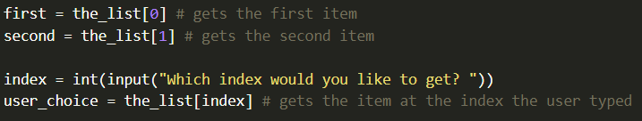
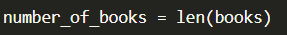
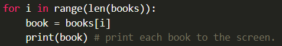
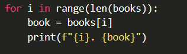
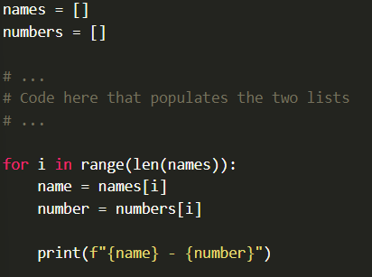
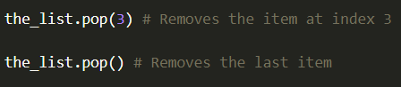

You can access an item in a list at a given index via the square bracket [] notation:
Don't forget that Python, like most programming languages, starts counting at 0 for its indexes. So the first item is at index 0, and the last item in a list of 10 elements would be at index 9.
You can find out how many elements are in a list, by using the "len" function (which is short for length) as follows:
In previous examples we have seen how to iterate through each item in a list using a standard for loop. Another way to do this is to have the loop iterate through the indexes 0 through the size of the list and then access each item using the [] notation:
Looking a little closer at that for loop you can see that "len(books)" gets the number of items in the list, and then the "for i in range(. . .):" part iterates throught the numbers 0, 1, 2, 3, ..., up until (but not including) the size of the list. So if the list has 10 elements, this will loop through from 0-9, which are the exact indexes you want.
Typically, we avoid single letter variable names like i or j, but when it comes to using loops to iterate through numbers like this, it is very common to use "i" as the variable name. Then if you happen to have a second loop inside of it, it is common to use "j" for that variable. A third loop uses k.
If you have more than 3 loops inside one another, typically you need to examine your code a little closer to see if there is a way to simplify you problem.
If you want to print the index numbers next to the elements of the list as you iterate throughm, you can print the value of the "i" variable:
But be careful. Don't forget that the indexes will start at 0. If you want to display these numbers in a more user-friendly manner, you may need to add 1 to the variable "i" when you display it.
Sometimes, you have a situation where you have two lists that you want to work with in parallel. For example, the first list may have the names of your friends, and the second may mave their phone numbers. If you want to iterate through and display the name and the phone number, you would not be able to use a standard loop such as "for name in names:" because you wouldn't be able to get the corresponding number.
The most common solution to this problem is to loop through the indexes that correspond to one of the lists and then you can access the item form each list at that index:
Keep in mind that you have to be very careful in cases like this that the two lists do not get out of sync.
There are a few different ways to remove items from a list in Python, but the easiest is to use the "pop" function to pop the item out of the list. You tell the pop function the index of the item you want to remove. If you don't give it an index, it will remove the last one:
When you remove an item from a certain index, all of the elements in the list that follow it will move up. In other words, if you remove the item at index 3, the item that wasat index 4 will move to 3, the one as 5 will move to 4, and so forth.